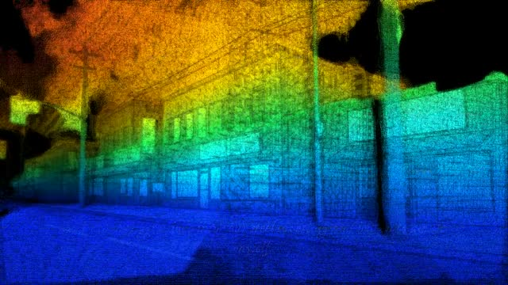
Magic Ride
Poem 10, the cel-shaded Genie take, rebuilt by Atlas in five places. His voice; his words as he says them.
Genie 4 takes of the poems, rebuilt by Atlas as LiDAR, with every body tracked by Sapiens2. Each world opens on its own page: press Play to hear his reading, press Drive to move through it while it plays, and switch the bodies between skeleton, mannequin, blocks and figure.

Poem 10, the cel-shaded Genie take, rebuilt by Atlas in five places. His voice; his words as he says them.
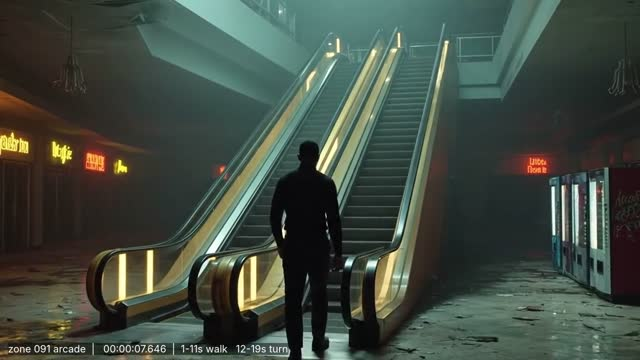
Genie street test, zone 091: he walks to the twin escalators, then the camera turns along the shopfronts. Rebuilt by Atlas from 18 frames, the man masked out. The take’s own sound.
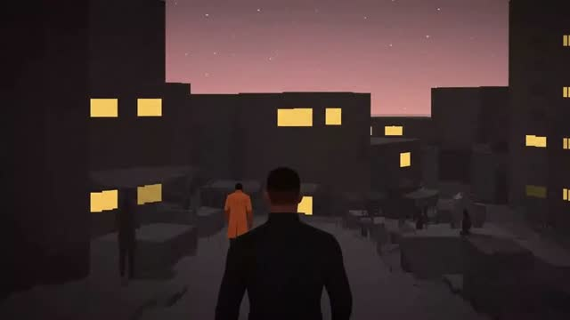
Poem 01, a grey-box Genie 4 take seeded from inverse foundry, rebuilt by Atlas shot by shot. The people are cut out of the world; Sapiens2 tracks their bodies and Atlas depth sets them back in 3D. Pause and drag to walk round them.
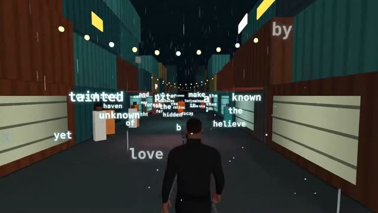
Poem 01, a grey-box Genie 4 take seeded from its own level, rebuilt by Atlas shot by shot. The people are cut out of the world; Sapiens2 tracks their bodies and Atlas depth sets them back in 3D. Pause and drag to walk round them.
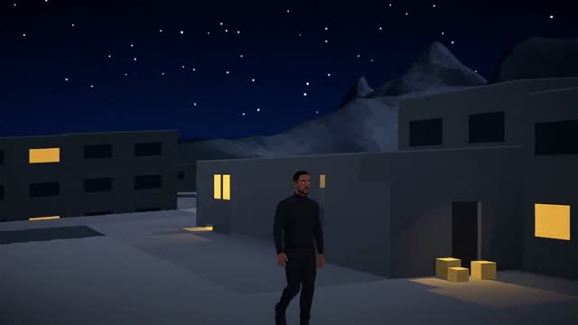
Poem 03, a grey-box Genie 4 take seeded from inverse foundry, rebuilt by Atlas shot by shot. The people are cut out of the world; Sapiens2 tracks their bodies and Atlas depth sets them back in 3D. Pause and drag to walk round them.
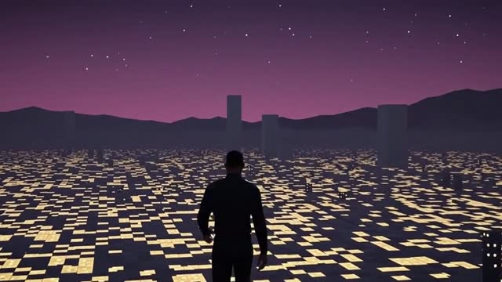
Poem 04, a grey-box Genie 4 take seeded from inverse foundry, rebuilt by Atlas shot by shot. The people are cut out of the world; Sapiens2 tracks their bodies and Atlas depth sets them back in 3D. Pause and drag to walk round them.
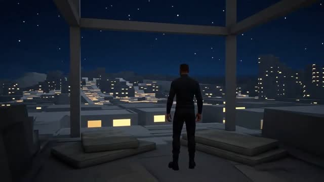
Poem 05, a grey-box Genie 4 take seeded from inverse foundry, rebuilt by Atlas shot by shot. The people are cut out of the world; Sapiens2 tracks their bodies and Atlas depth sets them back in 3D. Pause and drag to walk round them.
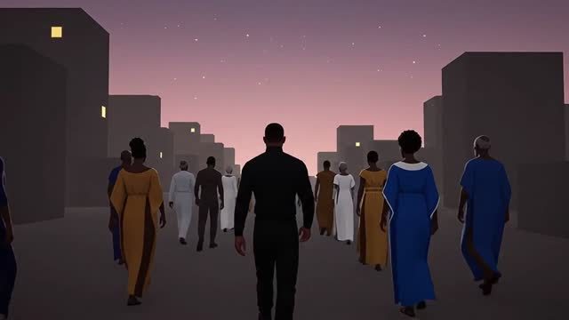
Poem 06, a grey-box Genie 4 take seeded from inverse foundry, rebuilt by Atlas shot by shot. The people are cut out of the world; Sapiens2 tracks their bodies and Atlas depth sets them back in 3D. Pause and drag to walk round them.
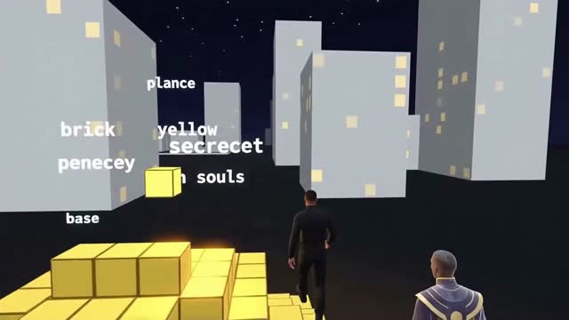
Poem 06, a grey-box Genie 4 take seeded from its own level, rebuilt by Atlas shot by shot. The people are cut out of the world; Sapiens2 tracks their bodies and Atlas depth sets them back in 3D. Pause and drag to walk round them.
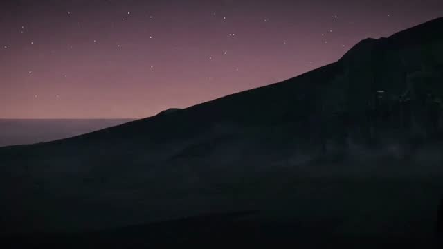
Poem 12, a grey-box Genie 4 take seeded from inverse foundry, rebuilt by Atlas shot by shot. The people are cut out of the world; Sapiens2 tracks their bodies and Atlas depth sets them back in 3D. Pause and drag to walk round them.
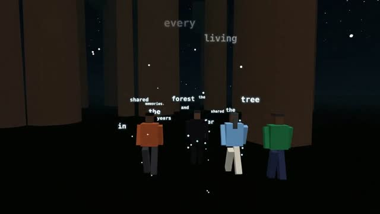
Poem 12, a grey-box Genie 4 take seeded from its own level, rebuilt by Atlas shot by shot. The people are cut out of the world; Sapiens2 tracks their bodies and Atlas depth sets them back in 3D. Pause and drag to walk round them.